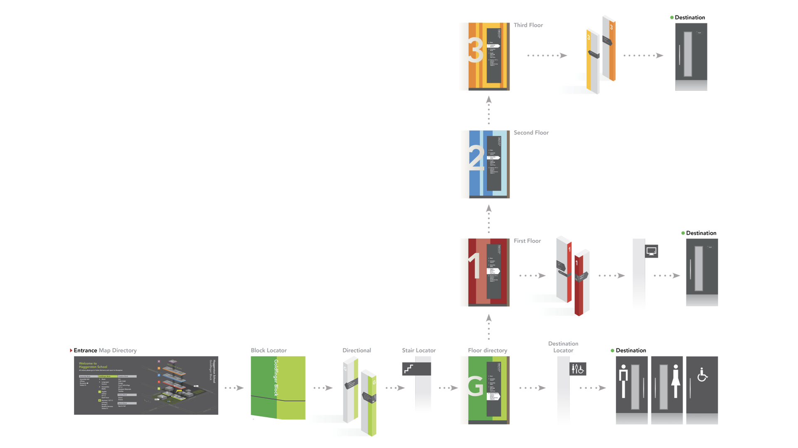
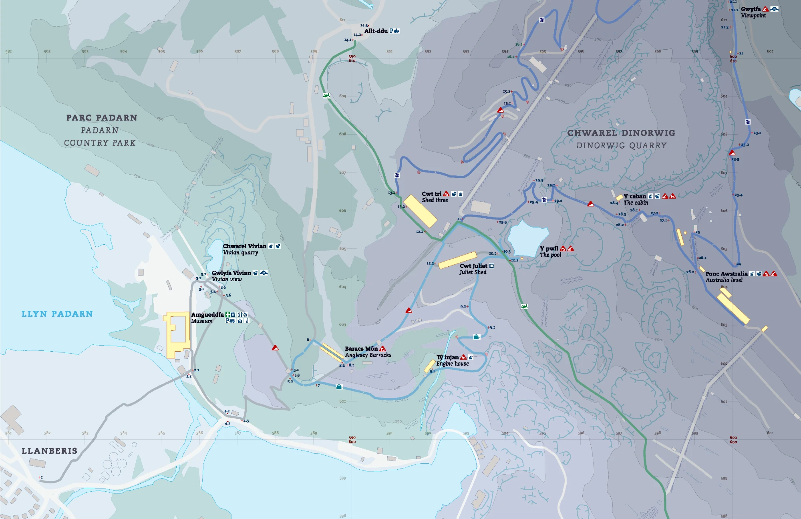
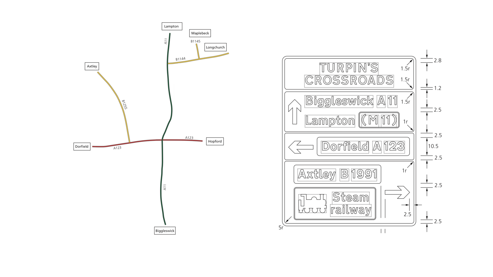
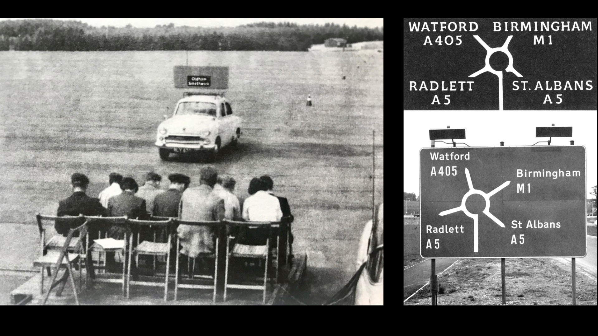

Learning from wayfinding
Before moving into digital product design, I designed wayfinding systems for schools, hospitals and other complex buildings. That work still shapes my approach: help people understand where they are, what they can do next and whether they’re on the right track.
Start with people and their journeys

Learn what people are trying to achieve, their context and how much they already know. A first-time visitor needs different guidance from someone who knows the way. Start every project with an understanding of the different user roles, their needs, their expectations, their context outside your product. Decide who you’re optimising for at which point.
Give the right information at the right moment
Those road signs on the motorway that just say ‘The North’? That’s a great example of ‘progressive disclosure’. You don’t need to list every town for the next 200 miles to know you’re heading in the right direction. The same’s true for digital products, revealing detail when it becomes useful and reducing distractions along the way.
Make complexity understandable

A map is a complex artefact, but an experienced navigator knows how to use one. They have a mental model of how the map works. Every cartographer needs to make decisions about what is included and what is omitted. Prominence and hierarchy are key. Likewise, in complex products, we should aim to preserve the capability people need while making it easier to learn and use.
Design the whole experience

A sign only works as part of a wider wayfinding system – a coherent visual language applied to a wayfinding plan. Likewise, every component in a design system needs to support a coherent journey. A system is more than a set of consistent visual designs and behaviours, it provides guardrails that enable good decision making.
Build together, test and learn

In wayfinding, others manufacture, install and extend the systems you design. Involving the people who will build and maintain a solution from the outset helps it last and adapt. The same applies to digital products: work with users, engineers and subject-matter experts to shape ideas, test prototypes and improve the experience as our needs change and our understanding evolves.
Shaping validation reports through collaboration and feedback →